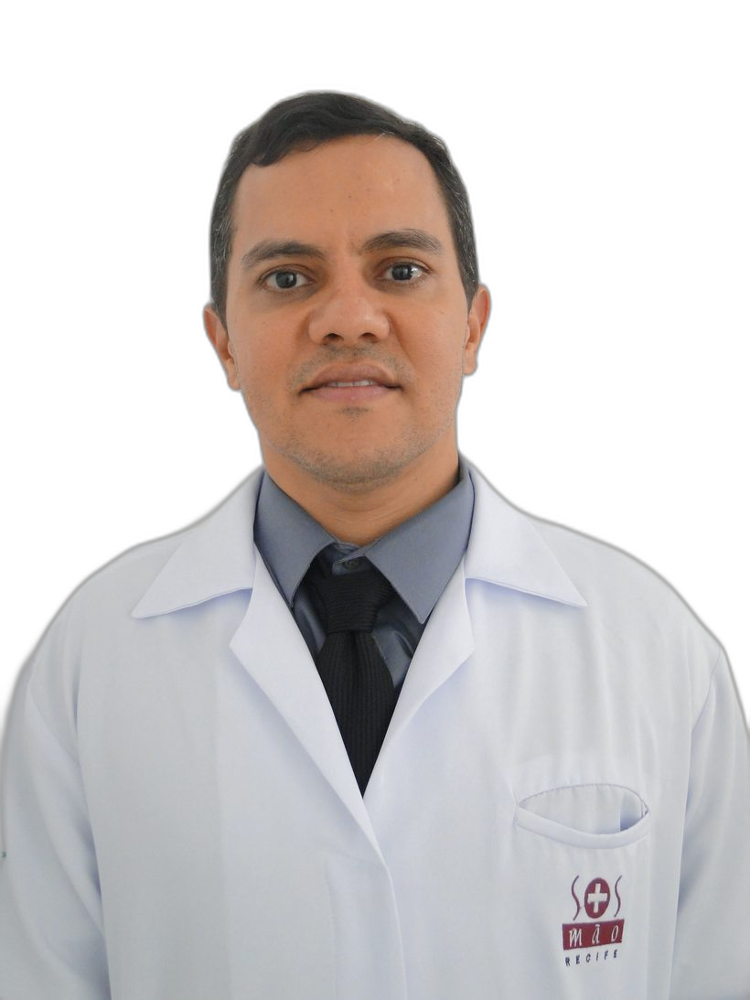
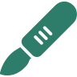

Visão do corpo inteiro
Avaliação que considera postura, hábitos e rotina de trabalho — não só o ponto da dor — para entender a real origem do problema.
Cirurgia da mão minimamente invasiva unida a uma abordagem que enxerga o paciente por inteiro — corpo, hábitos e recuperação. Menos cicatriz, retorno mais rápido e um cuidado verdadeiramente humano.

Dor, formigamento ou perda de força não são “coisa da idade” — têm causa e tratamento. Quanto antes avaliados, mais simples costuma ser resolver, muitas vezes sem cirurgia.
Se você se identificou com algum desses sinais, uma avaliação pode esclarecer a causa. Quero agendar uma avaliação
A mão é a parte do corpo que mais sofre traumatismos — é o nosso principal instrumento de trabalho. A cirurgia da mão se dedica ao diagnóstico e tratamento das doenças desse segmento delicado e complexo, e o Dr. Marcelo Crisanto reúne ampla experiência para tratá-las aliando técnica de ponta a um cuidado próximo do paciente.
Formado em Medicina e em Ortopedia e Traumatologia pela UFPE, especializou-se em cirurgia da mão e estagiou no Instituto Francês de Cirurgia da Mão, em Paris, aprendendo com grandes mestres. Dominou a artroscopia em Estrasburgo (França), São Paulo e Recife, o que lhe permite realizar cirurgias minimamente invasivas — com menores cicatrizes e recuperação mais rápida.
Há mais de 10 anos atua no SOS Mão Recife, onde a troca de experiências entre especialistas faz a diferença nos casos mais complexos. Está sempre se atualizando em cursos e congressos no Brasil e no mundo.
A cirurgia resolve o problema estrutural — mas a recuperação plena envolve muito mais. A abordagem integrativa combina a melhor evidência científica da ortopedia com o cuidado do estilo de vida, da dor, do sono e da mente, para que o resultado dure e o paciente volte a viver bem.
Avaliação que considera postura, hábitos e rotina de trabalho — não só o ponto da dor — para entender a real origem do problema.
Estratégias que unem tratamento clínico, controle da dor e cuidado com o bem-estar, reduzindo a necessidade de intervenções desnecessárias.

Quando a cirurgia é indicada, técnicas minimamente invasivas garantem menos trauma, menores cicatrizes e retorno mais rápido às atividades.
Plano de recuperação com orientação de movimento, fortalecimento e acompanhamento próximo até a alta — o cuidado não termina na sala de cirurgia.
Orientações sobre sono, alimentação e atividade física que favorecem a cicatrização e a saúde das articulações a longo prazo.
Tempo para ouvir, explicar cada opção com clareza e decidir junto com o paciente o melhor caminho para o seu caso.
A abordagem integrativa complementa — e nunca substitui — o tratamento médico convencional. Todas as condutas seguem a melhor evidência científica disponível e são individualizadas para cada paciente.
Diagnóstico preciso e tratamento cirúrgico com técnica minimamente invasiva quando indicado.
Tratamento clínico ou cirúrgico da tenossinovite estenosante, com recuperação rápida.
Correção da retração da fáscia palmar para devolver a mobilidade dos dedos.
Tratamento cirúrgico de fraturas das falanges e do punho, com fixação e reabilitação.
Reparo de tendões flexores e extensores, incluindo dedo em martelo e em garra.
Avaliação por imagem e conduta adequada para cistos no punho e articulações.
Manejo integrativo da dor e da função, com opções conservadoras e cirúrgicas.
Procedimentos minimamente invasivos do punho, com menor trauma e recuperação acelerada.
Atendimento presencial em Recife e consulta por vídeo para todo o Brasil.
Av. República do Líbano, 251 — Torre 3, 1º andar · Pina, Recife/PE · 51110-160
Av. Domingos Ferreira, 2265 · Boa Viagem, Recife/PE · 51020-031
Rua 17 de Agosto, 209 · Casa Forte, Recife/PE · 52060-540
Agendamento por telefone ou WhatsApp (sem agenda online neste endereço). Pagamento particular: dinheiro ou transferência.
Atendimento por telemedicina para todo o Brasil. Agendamentos com a secretária Marília.
Baseado em 93 opiniões verificadas no Doctoralia
Médico atencioso, explica cada detalhe do tratamento com calma e clareza. Me senti seguro em todo o processo.— Paciente verificado
Profissional excelente. A cirurgia foi tranquila e a recuperação muito mais rápida do que eu esperava.— Paciente verificado
Atendimento humano de verdade. Cuidou não só da minha mão, mas de me orientar em tudo. Recomendo muito.— Paciente verificado
Do primeiro contato ao seu retorno às atividades, com você no centro de cada decisão.
Escolha o canal mais fácil para você: WhatsApp, telefone com a secretária ou o Doctoralia. Presencial em Recife ou por vídeo.
Uma escuta atenta e um exame cuidadoso para entender a causa — não apenas o sintoma — considerando sua rotina e seus hábitos.
Do cuidado conservador à cirurgia minimamente invasiva, quando necessária, com acompanhamento próximo até a sua recuperação.
Cirurgião da mão e ortopedista-traumatologista, com registro CRM-PE 11472 e títulos de especialista (RQE 1914 e 7442).
É um cuidado que une a técnica cirúrgica de ponta ao olhar para o paciente como um todo — dor, hábitos, sono e reabilitação — sempre baseado em evidência científica e sem substituir o tratamento médico convencional.
Sim. Há atendimento por telemedicina. Os agendamentos de teleconsulta são feitos com a secretária Marília — fale pelo WhatsApp ou telefone.
Você pode agendar pelo WhatsApp, por telefone com a secretária ou diretamente pelo perfil no Doctoralia. Use os botões de agendamento nesta página.
Agende sua consulta presencial em Recife ou por telemedicina. Estamos à disposição para ajudar.